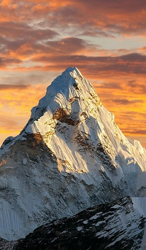
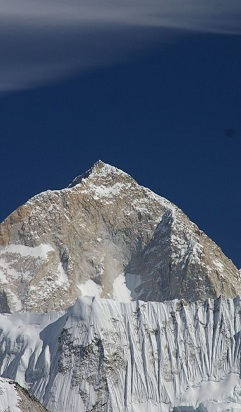
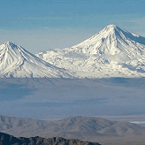
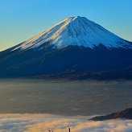
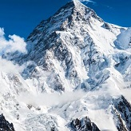
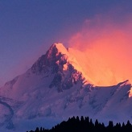

Восхождение на Джомолунгму — сложное и опасное мероприятие, требующее серьёзной физической и психологической подготовки, а также надлежащего снаряжения и опытных гидов. Несмотря на смертельный риск, тысячи людей ежегодно пытаются достичь вершины. Экстремальная высота горы и суровые условия привели к многочисленным смертельным случаям, в том числе от лавин, падений, высотной болезни и других опасностей.

Макалу представляет из себя отдельную вершину, расположенную в 14 милях восточнее Эвереста. Грандиозная уже только своим размером, гора имеет к тому же правильную пирамидальную форму, что усиливает впечатление. Гора очень непростая.

Арарат
Арара́т — вулканический массив на востоке Турции; самая высокая вершина Турции и Армянского нагорья.

Фудзияма
Фудзия́ма — действующий стратовулкан на японском острове Хонсю в 90 километрах к юго-западу от Токио.

К2
Чогори́— вторая по высоте горная вершина Земли (после Джомолунгмы).

Каченджанга
Канченджа́нга — горный массив в Гималаях. Главная вершина массива.
Эльбрус
Эльбру́с— самая высокая горная вершина России и Европы при условии проведения границы между Европой и Азией по Главному Кавказскому хребту или южнее.

Нанга-Парбат
Нанга-Парбат — девятый по высоте восьмитысячник мира, один из трёх самых опасных для восхождения восьмитысячников по статистике несчастных случаев.